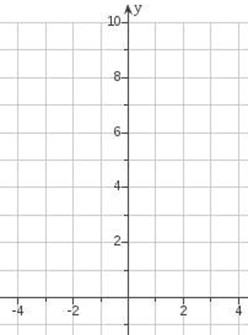

Exponential Functions and Equations
Exponential Functions
Many real-world phenomena, such as bacteria growth, radioactive decay, population growth dynamics, and compound interest, are modeled with exponential functions.
Definition
An exponential function is a function of the form
\[f(x)=C\cdot a^x\]
where \(a\) is a positive real number with \(a\neq 1\), and \(C\) is a nonzero real number. In this course, we will usually focus on the simpler form
\[f(x)=a^x\]
In an exponential function, the variable \(x\) is in the exponent, so \(x\) is called the exponent.
Why do we require these conditions on the base?
-
Why is \(a=1\) not allowed? Because \(1^x=1\) for every real number \(x\), so the function would be constant and would not show growth or decay.
-
Why does \(a\) have to be positive? A negative base can create outputs that are not real numbers for many exponent values, especially non-integer exponents, so the function would not be defined for all real \(x\).
Graphs of Exponential Functions
Example 1.
Make a T-chart for the function \(y=2^x\) and sketch its graph.
| \(x\) | \(y=2^x\) |
|---|---|
| \(-3\) | |
| \(-2\) | |
| \(-1\) | |
| \(0\) | |
| \(1\) | |
| \(2\) | |
| \(3\) |

Use this space to discuss the table values, plot points, and sketch the curve of \(y=2^x\).
Example 2.
Sketch the general shapes of exponential growth and exponential decay. State the domain and identify the line \(y=0\) as the horizontal asymptote.
Exponential Growth
Occurs when \(a>1\).
Domain: \((-\infty,\infty)\)
Range: \((0,\infty)\)
Horizontal asymptote: \(y=0\)
Use this space to draw a general exponential growth curve.
Exponential Decay
Occurs when \(0<a<1\).
Domain: \((-\infty,\infty)\)
Range: \((0,\infty)\)
Horizontal asymptote: \(y=0\)
Use this space to draw a general exponential decay curve.
Euler’s Number
Definition
The number e \(\approx 2.7182818\ldots\) is an irrational number.
One way to define it is through the limit
\[e=\displaystyle \lim_{x\to\infty}\left(1+\frac{1}{x}\right)^x\]
This number appears naturally in calculus, finance, growth models, and differential equations.
Why \(e\) matters
-
\(e^x\) is the exponential function with especially useful algebra and calculus properties.
-
It models continuous growth and continuous compounding.
-
The natural logarithm \(\ln(x)\) is defined using base \(e\).
-
The graph of \(y=e^x\) has the same basic shape as other exponential growth graphs, but it is the most important exponential function in higher mathematics.
Example 3.
Approximate \(e^{1.2}\) using a calculator.
Use this space to evaluate \(e^{1.2}\) and discuss calculator entry.
Example 4.
Sketch the graph of the function \(f(x)=e^x\).
Use this space to plot a few key points, identify the intercept, and sketch the shape of \(f(x)=e^x\).
Solving Equations Involving Exponents that are Variables
Many exponential equations can be solved without logarithms by using the one-to-one property of exponential functions. In particular, if
\[a^{x_1}=a^{x_2}\]
for a base \(a>0\) with \(a\neq 1\), then it must be the case that:
\(x_1=x_2\)
So the goal is to rewrite both sides with the same base. Then set the exponents equal to each other and solve.
Example 5.
Solve the following exponential equations for the unknown variable. Check solutions with a calculator if desired.
-
\(7^x=7^3\)
Match bases, then set exponents equal.
-
\(2^{2x-1}=4\)
Rewrite \(4\) using base \(2\).
-
\(3^4=3^{x-1}\)
Set exponents equal after the bases match.
-
\(3^{x-4}=27\)
Rewrite \(27\) as a power of \(3\).
Recall
Before doing the next set of problems, remember these exponent rules:
\[a^{-s}=\dfrac{1}{a^s}, \quad \text{ and } \quad \dfrac{1}{a^{-s}}=a^s\]
Example 6.
Solve each equation. These are arranged in a two-column format for class work.
-
\(\dfrac{1}{6^{-x}}=36\)
Simplify the left side first.
-
\(5^{x+2}=\dfrac{1}{5}\)
Rewrite the right side as a power of \(5\).
-
\(3^{3x-4}=\dfrac{1}{27}\)
Express both sides with base \(3\).
-
\(3^{x^2}=9^x\)
Rewrite \(9^x\) using base \(3\), then compare exponents carefully.
-
\(9^x=27\)
Rewrite both sides using a common prime base.
-
\(9^{x-1}=27^x\)
Rewrite both sides using base \(3\).
-
\(8^{-x+14}=16^x\)
Convert both bases to powers of \(2\).
-
\(4^x=\dfrac{1}{\sqrt{2}}\)
Write the radical using exponents and use base \(2\).
-
\(9^x=\dfrac{1}{\sqrt[3]{3}}\)
Use rational exponents on the right side.
-
\(7^{\cfrac{x-2}{6}}=\sqrt{7}\)
Rewrite the square root as \(7^{1/2}\).
A natural next question
Equations such as \(4=2^x\) are easily solved because we can match the bases on each side of the equation. But what about an equation like \(5=2^x\)?
We could estimate the solution by trial and error, but to solve it exactly we will need a new concept that we are going to learn later in the chapter: logarithms.